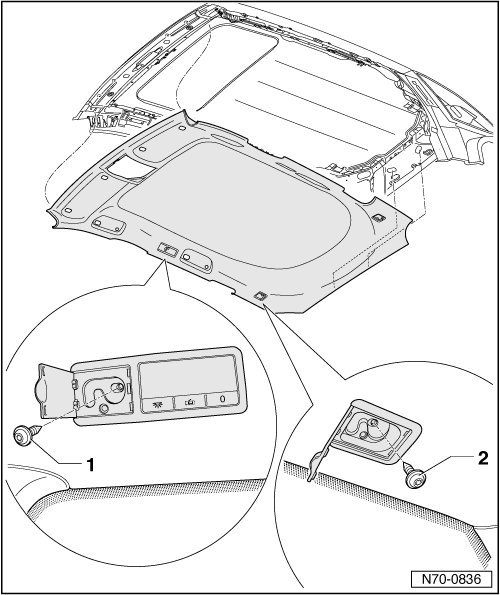
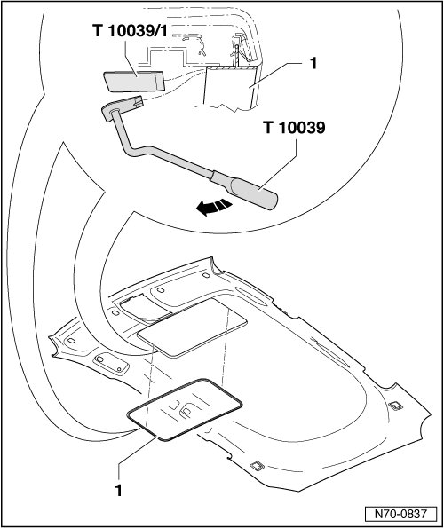

Headliner
Headliner
Removing
- Switch off ignition.
- Remove upper A-pillar trim --> [ Upper A-Pillar Trim ] Upper A-Pillar Trim
- Remove B-pillar trim --> [ B-Pillar Trim ] B-Pillar Trim
- Remove C-pillar trim --> [ C-Pillar Trim ] C-Pillar Trim
- Remove roof end strip --> [ Roof End Strip ] Roof End Strip
- Remove D-pillar trim --> [ D-Pillar Trim ] D-Pillar Trim
- Remove visors --> [ Sun Visor ] Service and Repair.
- Remove grab handles (roof) --> [ Roof Grab Handles ] Service and Repair.
- Remove console in headliner --> [ Headliner Console ] Headliner Console.
- Open lamp and hook unit door on both sides of vehicle.
- Remove screw - 1 - from both lamp and hook units.
- Open flap of hook unit on both sides of vehicle.
- Remove screw - 2 - from both hook units.

Vehicles with sunroof only:
- Push wedge (T10039/1) between frame - 1 - and headliner.
- Using release lever (T10039), separate frame from headliner, moving all the way around in direction of arrow.
All vehicles:
- Lower headliner and disconnect wiring harness.
- Take headliner out of vehicle through tailgate opening.

Installing
- Perform the steps used for removal in reverse order.